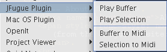

About JFugue
(from the JFugue website: www.jfugue.org)
JFugue is an open-source Java API for programming music without the complexities of MIDI.
JFugue makes programming music this easy:
Player player = new Player();
player.play("C D E F G A B");
In addition, JFugue provides many more features:
About Sound Banks
You can download sound banks for your Java installation here:
http://java.sun.com/products/java-media/sound/soundbanks.html
You need to put the downloaded sound bank in to your JRE/lib/audio directory. You do not need to change the name at all, or delete existing sound banks. Java will automatically find the highest quality one and use it.
Plugin Features
JFuguePlugin's Menu:

Play Buffer - Plays the entire contents of the current buffer through JFugue's Player.
Play Selection - Plays the currently selected text. If your buffer contains "T160 I[Cello] G3q G3q G3q Eb3q Bb3i G3q Eb3q Bb3i G3h", and you have selected "Eb3q Bb3i G3q" and "G3h", you will hear "Eb3q Bb3i G3q G3h". Also, if no selection is found, the entire buffer is played.
Buffer to midi - Takes the contents of the current buffer and uses JFugue's Player to save it to a midi file.
Selection to midi - Takes the currently selected text and uses JFugue's Player to save it to a midi file.
The JFuguePlugin also makes the aforementioned features available through beanshell which makes it easy to write macros that play music, or sounds.
Function available for beanshell scripts:
playBuffer(view) - plays the content of the current buffer.
playSelection(view) - plays the currently selected text.
playMusicString(musicString) - plays any given music string.
createJFuguePlayer() - creates a new JFugue Player to play.
saveBuffer(view) - saves the content of the current buffer as a midi file.
saveSelection(view) - saves the currently selected text as a midi file.
saveMusicString(view, musicString) - saves the given music string as a midi file.
Eg:
// playMusicString
playMusicString("T160 I[Cello] G3q G3q G3q Eb3q Bb3i G3q Eb3q Bb3i G3h");
import org.jfugue.*;
Player player = createJFuguePlayer();
// "Frere Jacques"
Pattern pattern1 = new Pattern("C5q D5q E5q C5q");
// "Dormez-vous?"
Pattern pattern2 = new Pattern("E5q F5q G5h");
// "Sonnez les matines"
Pattern pattern3 = new Pattern("G5i A5i G5i F5i E5q C5q");
// "Ding ding dong"
Pattern pattern4 = new Pattern("C5q G4q C5h");
// Put it all together
Pattern song = new Pattern();
song.add(pattern1, 2); // Adds 'pattern1' to 'song' twice
song.add(pattern2, 2); // Adds 'pattern2' to 'song' twice
song.add(pattern3, 2); // Adds 'pattern3' to 'song' twice
song.add(pattern4, 2); // Adds 'pattern4' to 'song' twice
// Play the song!
player.play(song);
Using any of the save functions will prompt you for the file name.